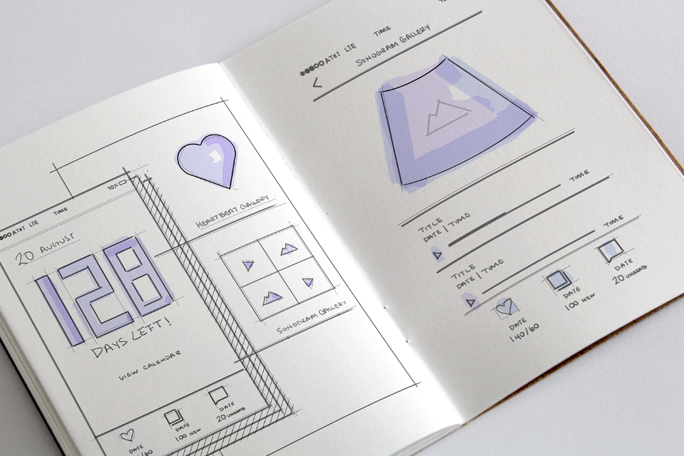
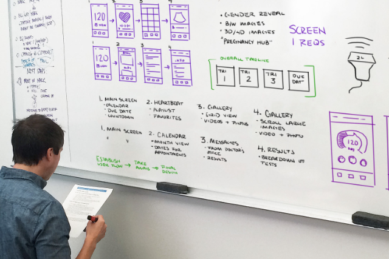
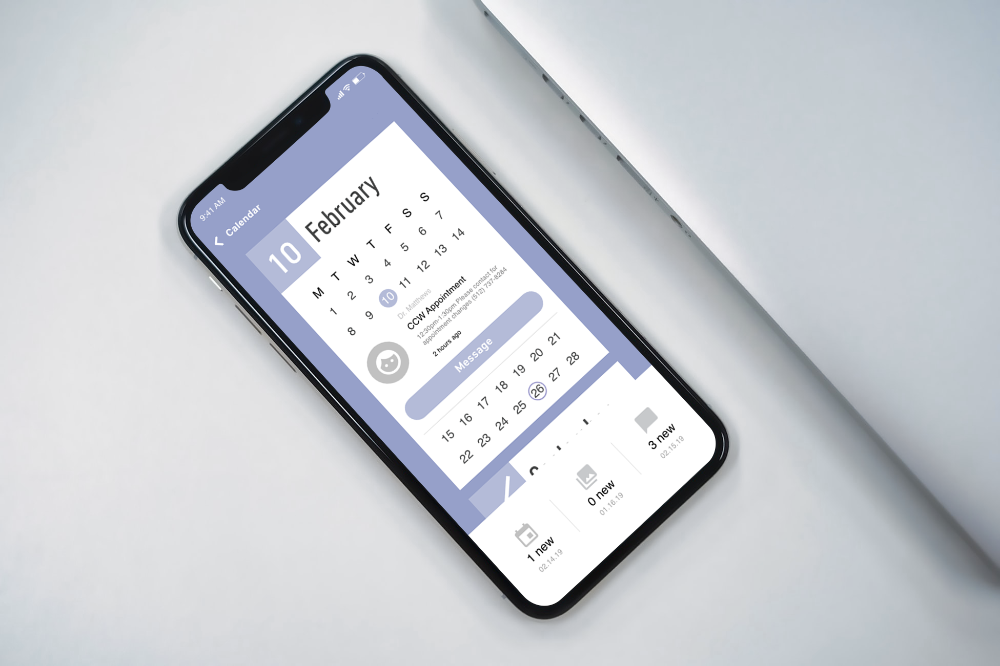
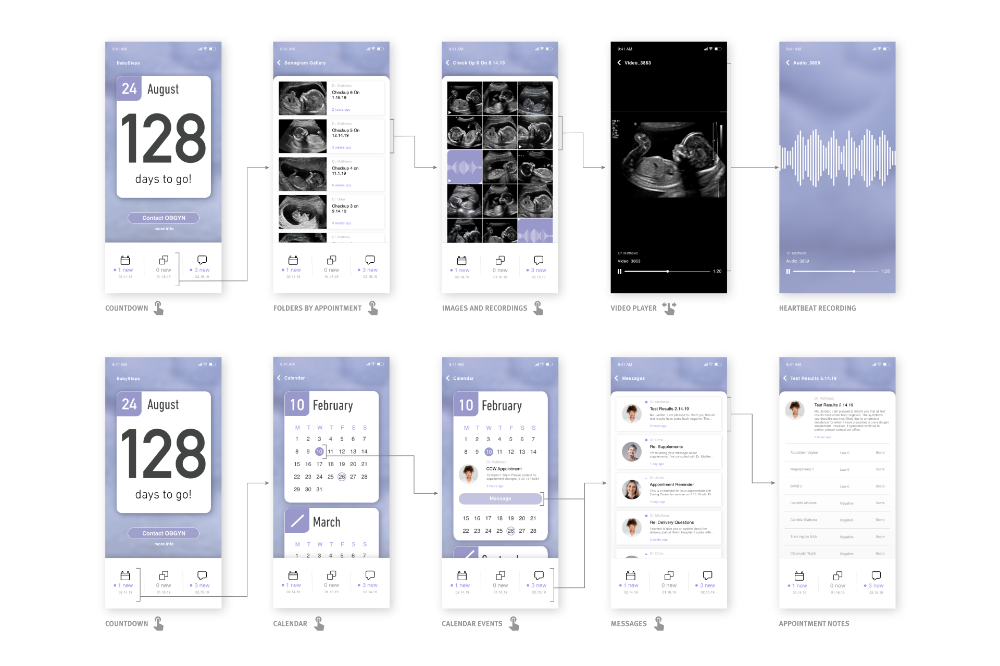
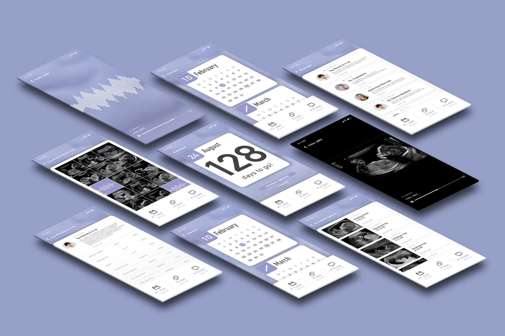

Introduction
Babysteps is a pregnancy hub that helps expecting parents keep track
of important dates, correspond with doctors, and collect and store
all images, videos, and audio clips gathered during medically safe
ultrasound exams. In the development of this project I contributed
all UX/UI designs to give patients a way to track their pregnancies,
and create an app that would encourage positive relations between
parents and their healthcare providers.
Process
This project began with a visit to a Milwakee-based ultrasound
"party clinic" to observe how technicians go about sharing all
collected visuals and audio clips with expecting parents. An ideation
phase then followed to map out the user experience of the clinics and
to establish which aspects could be incorporated back into a medical
setting by way of a smartphone app.



Conclusion
Not only did this project become my first exploration into digital UI design,
but it also became a unique exploration into the medical industry's response
to the divide between strictly medical and "extraneous" ultrasound exams.
This created an opportunity to design a comprehensive system to ensure the
safety of expecting mothers while giving them a platform through which to track
and share their child's growth.

